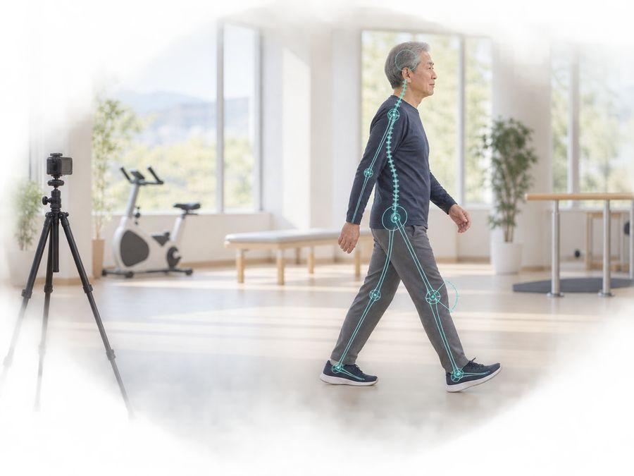

日曜・祝日はお休みです。
1クール 定員8名。空いている曜日を押すと、お問い合わせ欄にご希望が入ります。
介護度が高くても、移動が自立していればご相談ください。移動に介助が必要な方・車いすでの送迎が必要な方は、これまでどおり通常の通所リハビリテーションをご案内します。

どこに問題があるのかを見極めて、そこに対して治療する。ここがいちばんの強みです。

カメラの前を歩いていただくだけ。歩く速さ・歩幅・左右の差・膝の伸びを数値でお出しします（スタンフォード大学の仕組み）。
食事・入浴・レクリエーションはありません。リハビリテーションに集中していただく短時間のデイケアです。
水分の提供は行っておりません。動きやすい服装・靴でお越しください。
阪本病院からおおむね半径4km
圏外にお住まいの方も、まずはご相談ください。
※ 送迎のルートや道路状況により、対応できない場合があります。